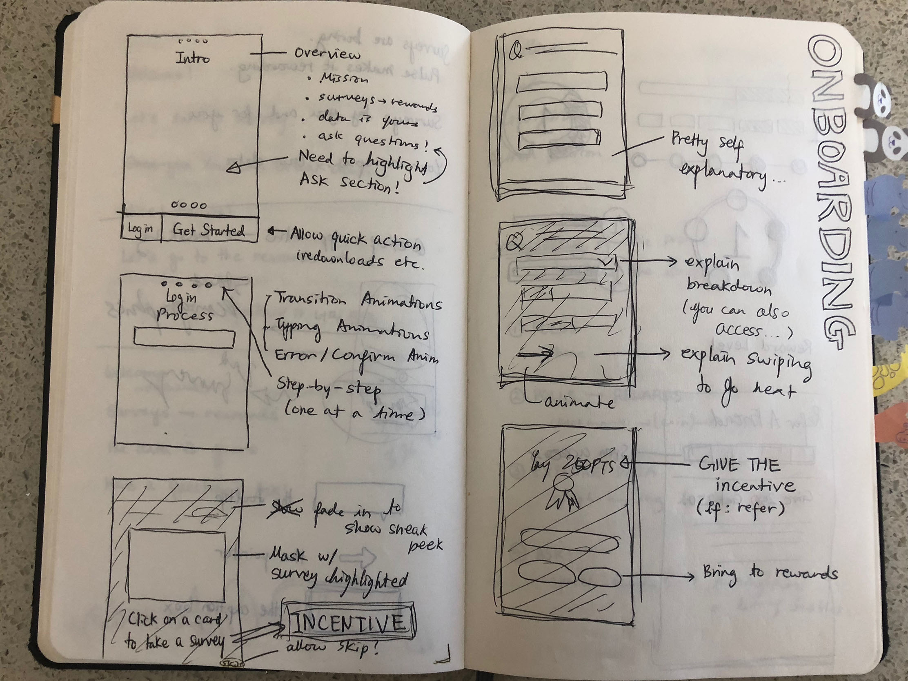
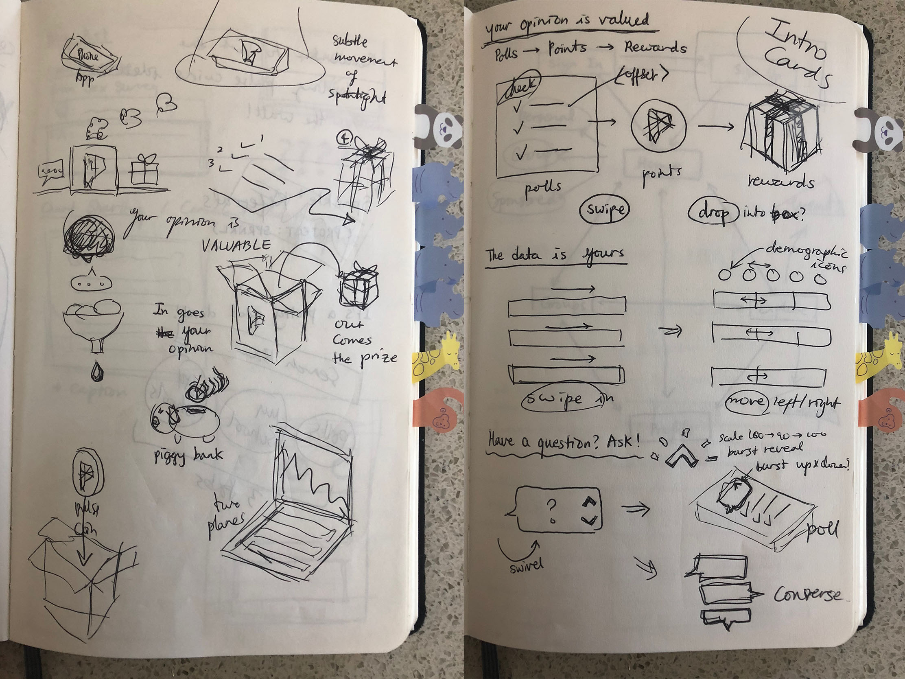
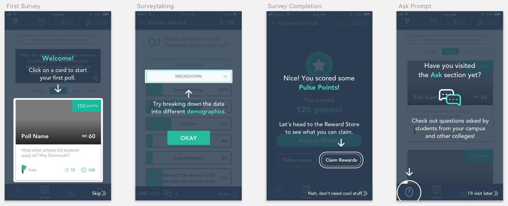
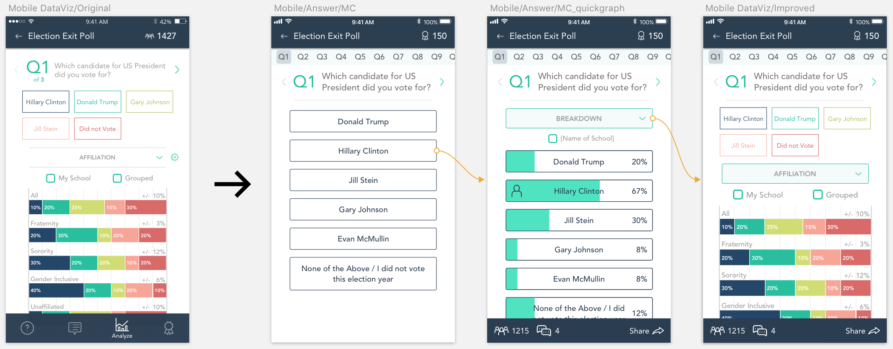
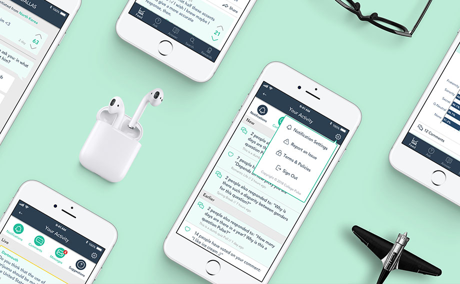

Over the summer of 2018, College Pulse extended its user pool to students from any college in the United States. One of the most common “issues” that the new users reported was that they could not find the confirmation code sent to their email in the registration process.
This lead me to think of ways we could make the Pulse experience for the first-time user more friendly and easy.
I went through the existing onboarding process and noticed a few pain points:
The last point was especially important to the Pulse team: we were trying to create a platform where users can have access to the data of the polls they take, but not many users were using the data analysis tools we were providing.
By going through the whole process and figuring out points in which we could reframe the data we provide and nudge the user in the right way, we could direct the users to get a better understanding of the full scope of features that are offered on Pulse.
Intro cards are the first things people see when they first download the app. It’s like the first impression of a person, determining how the users will feel about continuing to use the app.
To me, these were the characteristics of Pulse that made it different from your typical survey-taking experience:
Having these characteristics of Pulse in mind, I came up with some sketches and turned them into illustrations with little animations. The animations added a few extra hours to the work, but animations add delight, and that delight adds to the improved first impression. (I tend to be a strong proponent of delight.)

To ensure quality of data, Pulse users have to authenticate their
affiliation to a campus through their school email. But this step was a
bottleneck in our onboarding process, where the user couldn’t find the
authentication code. Most of the time, the problem was as simple as
checking for the email in your spam/junk folder.
Along with clear guidance in the authentication page, the overall sign up
flow was broken down into one step at a time.
There are mainly three kinds of Pulse users: ones who come for the data and discussion, ones who complete surveys to get rewards, and the ones who engage in a little bit of everything. The problem was that these features—data exploring, discussion, and rewards—were not being highlighted in the first few minutes of using Pulse.
Rather than giving a tutorial of all features at once, we nudge the user in a certain direction in their first few steps in Pulse.
To further highlight that the data is available to the users, we decided to show the data immediately after someone selects an answer option. In the case in which there are a lot of answer options, the discussion section could only be accessed through lots of scrolling. I was important to make discussions more accessible and easily show when a question is especially popular.
Some of these designs have yet to be implemented to the actual application. But immediately after the overlays were added, the percentage of users starting to input their demographics rose from 65% to 91%. The percentage of users finishing their first survey after the demographics also increased from 55% to 78%.
Also, instead of showing the most recent survey, we used a hot sort to make the first-time users take one regarding a heated topic, such as gun control, to pique their interest and show that there is a lot of discussion happening among the users. This lead the percentage of people finishing a second poll from 30% to 51%.
Check out these pages!
{kind=link}